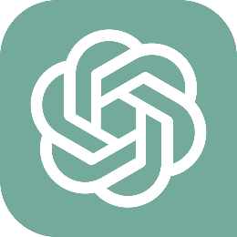

La profesión del traductor público se cimenta, desde un punto de vista diacrónico, sobre la tangibilidad del papel, la custodia física de la información y la solemnidad del sello. No obstante, en la actualidad, asistimos a una realidad completamente diferente. La digitalización del trabajo no representa un mero cambio de soporte, sino una reconfiguración completa de la arquitectura de la confianza y de la confidencialidad.
El Diccionario de la Lengua Española define “confidencialidad” como la “cualidad de confidencial” y a “confidencial” como lo “que se hace o se dice en la confianza de que se mantendrá la reserva de lo hecho o lo dicho”, y ofrece como ejemplo “información confidencial”. “Reservado, secreto, íntimo, personal, privado, particular” son sinónimos de “confidencial”.
Los traductores públicos, al igual que muchos otros profesionales, nos vemos sujetos al deber de confidencialidad. Este deber se encuentra consagrado en diversos códigos de ética. En el caso del Código de Ética del Colegio de Traductores Públicos e Intérpretes de la Provincia de Buenos Aires, se consagra en el artículo 10:
ARTÍCULO 10. PRINCIPIO DE CONFIDENCIALIDAD
-
El traductor público debe respetar rigurosamente el
secreto profesional y negarse rotundamente a faltar a su
deber de confidencialidad. Solo quedará exceptuado de tal
deber:
- cuando el cliente o destinatario de su traducción lo autorice expresamente;
- si se tratara de su propia defensa ante el Tribunal de Disciplina o ante un tribunal de justicia;
- cuando la ley se lo exija.
- Debe resguardar los documentos que le hubieran sido confiados.
Es bueno tener en consideración que en el mundo analógico, la confidencialidad podía romperse por una acción humana deliberada (como el robo o el extravío de un documento, o su fotocopiado, entre otros). En el mundo digital en el que vivimos, la confidencialidad puede verse violentada por un diseño sistémico (indexación automática, escaneo de antivirus, entrenamiento de inteligencia artificial, por nombrar algunas posibilidades).
Ahora bien, en un panorama como el actual no es indebido preguntarse: ¿existe la confidencialidad? Sin investigación previa ni mucha consideración, uno podría verse tentado de concluir de forma afirmativa. Sin embargo, antes de contestar, es menester observar diferentes servicios en línea actuales que muchos traductores públicos utilizan casi a diario.
Google Drive
Google Drive es un servicio de almacenamiento en la nube que permite guardar, crear, editar y compartir archivos desde cualquier dispositivo. Su popularidad se debe a la sencillez de su interfaz y al hecho de que se encuentra preinstalado en la mayoría de los dispositivos Android.
En cuanto a la confidencialidad y a la privacidad, en sus términos de servicio podemos encontrar los siguientes apartados:
“Los archivos guardados en tu unidad son privados hasta que decidas compartirlos. [...] No compartiremos tus archivos ni tus datos con nadie, excepto en la medida en que se especifique en nuestra Política de Privacidad. [...] Es posible que revisemos el contenido para determinar si es ilegal o infringe nuestras Políticas del Programa [...]. Sin embargo, esta posibilidad no implica necesariamente que revisemos el contenido, por lo que no debes dar por sentado que vayamos a hacerlo [...].”
El lenguaje empleado resulta, cuanto menos, poco claro. Asimismo, en su política de privacidad, se afirma lo siguiente:
Usamos la información que recopilamos para personalizar nuestros servicios para usted, como proporcionarle recomendaciones, y contenido y resultados de la búsqueda personalizados. [...] No le mostramos anuncios personalizados basados en su contenido de Drive, Gmail o Fotos.
Lo anterior indica que la información no se utiliza para personalizar anuncios, pero existe el procesamiento automático de datos confidenciales con fines de indexación, detección de virus, sincronización, funciones de búsqueda, entre otros. Ese procesamiento implica que la información confidencial no se encuentra bajo el control total del usuario. Existe el riesgo permanente de fugas, filtraciones o accesos indebidos (legales, técnicos o por error humano).
En este sentido, para que Google Drive funcione de la manera que lo hace (por ejemplo, permite encontrar archivos PDF en búsquedas que incluyen su contenido o previsualizar archivos sin descargarlos), sus servidores deben tener la capacidad técnica de “leer” o “describir” los archivos que se encuentran en su nube, sin distinción de formato. En el caso de los PDF, Google cuenta con un OCR incorporado. En el caso de los documentos de procesadores de texto y hojas de cálculo, el proceso es más sencillo.
Además, es muy posible que Google utilice todos sus datos almacenados para alimentar su IA, Gemini, aunque Google asegura que solo alimenta a Gemini con datos públicos. Por lo menos en sus versiones gratuitas, los términos de uso otorgan licencias amplias a Google con el fin de “mejorar sus servicios”.
Por lo tanto, se desaconseja que los traductores públicos utilicen estos servicios por lo menos con documentos que contengan información muy sensible.
OneDrive
OneDrive es un servicio de Microsoft, que al igual que Google Drive, ofrece almacenamiento en la nube y permite guardar, crear, editar y compartir archivos desde cualquier dispositivo. Suele estar preinstalado en la mayoría de las máquinas con el sistema operativo Windows 10 o Windows 11.
En sus páginas de soporte, Microsoft sostiene lo siguiente:
“Al colocar los datos en OneDrive almacenamiento en la nube, [sic] sigue siendo el propietario de los datos [...]. Además, OneDrive y Office 365 invierten mucho en sistemas, procesos y personal para reducir la probabilidad de que se produzcan vulneraciones de datos personales y para detectarlas y mitigar sus consecuencias rápidamente en caso de que ocurran [...]. Microsoft no usa ni transfiere ninguno de los datos de su organización para entrenar modelos de inteligencia artificial, modelos de gran tamaño o cualquier otro modelo [...]. Para mostrar anuncios en los que puedas estar más interesado, usamos datos como la ubicación, las búsquedas web de Bing, páginas web que visites de Microsoft o de anunciantes, datos demográficos y cosas que hayas marcado como favoritas. No usamos lo que puedas decir en correos electrónicos, chats, videollamadas, correos de voz o en documentos u otros archivos personales”.
Debemos tener en cuenta que, en lo que respecta a políticas, lo anterior es extensivo a todos los productos de Microsoft (como Microsoft Office). Microsoft, a priori, parece una opción mucho más confiable que otras; no obstante, en primer lugar, como cualquier servicio en la nube hay procesamiento automático, sincronización, copias de seguridad, acceso técnico, entre otros, que implican que los documentos que allí se transfieren están expuestos a posibles fallos, errores de configuración, filtraciones, o requerimientos legales.
En segundo lugar, hay otros matices, en especial con la incorporación reciente de Copilot a diferentes servicios de Microsoft, bajo el slogan “tu compañero IA”.
Copilot dentro de Microsoft Office 365 se ha convertido en una presencia constante que una y otra vez sugiere reescrituras o ediciones para el usuario. Esto implica que, por ejemplo, para que Copilot pueda "resumir un texto que está leyendo" o “reescribirlo con mayor rigor académico”, debe copiar el texto y enviarlo a una instancia de procesamiento (a menudo basada en modelos de OpenAI alojados en Azure). Es decir, este proceso no solo involucra el lugar de trabajo del usuario, sino el envío de información y su posible utilización para entrenar futuros modelos de inteligencia artificial.
En principio, según vemos en la mayoría de las conversaciones y en su Centro de Ayuda, los mensajes y archivos que se envían por esta aplicación de mensajería instantánea “se encuentran cifrados de extremo a extremo” (E2EE, por sus siglas en inglés) bajo un protocolo innovador de una empresa llamada Signal. En términos sencillos, el cifrado de extremo a extremo implica que el mensaje que un usuario envía se cifre con una clave que solo los dispositivos del emisor y el receptor poseen, y solo se descifre en el dispositivo del receptor.
No obstante, en el caso del envío de un archivo, “el archivo se almacena temporalmente en los servidores de Meta para su entrega”, y luego se elimina. Esto sigue implicando una etapa intermedia, aunque, con el cifrado, su vulnerabilidad es menor.
Por otro lado, aunque el contenido de los mensajes esté cifrado, WhatsApp recopila metadatos: quién habla con quién, a qué hora, desde dónde, tamaño y cantidad de archivos que se reciben y envían, entre otros. Esos metadatos pueden convertirse en información sensible si una tercera parte desea establecer o demostrar relaciones entre clientes, abogados, traductores públicos, y otros.
Asimismo, en muchos teléfonos, WhatsApp guarda los archivos en la galería o en la nube (Google Photos y Google Drive en dispositivos con Android, iCloud en dispositivos con iPhone) de forma automática, lo que rompe la cadena de confidencialidad, muchas veces sin que el traductor público ni el cliente lo adviertan.
En conclusión, WhatsApp no representa mayor peligro que otro servicio de envío de archivos (como el correo electrónico), sino que conlleva riesgos similares e incluso menores.
ChatGPT

ChatGPT es un modelo de lenguaje de gran escala (Large Language Model o LLM, por sus siglas en inglés) desarrollado por OpenAI. Se trata de un sistema de inteligencia artificial entrenado con grandes volúmenes de texto para procesar instrucciones formuladas en un entorno conversacional y generar texto en lenguaje humano de manera coherente y contextual.
En cuanto a la confidencialidad, en la página de servicio de ayuda de ChatGPT podemos encontrar:
“Por defecto, las conversaciones de usuarios gratuitos pueden usarse para mejorar modelos. Los usuarios tienen la opción de no compartir su información en las opciones de Control de Datos. Lo mismo ocurre con las cuentas Plus […]”.
¿Qué implica esto? Supongamos que un traductor público pega un texto confidencial en ChatGPT para que lo traduzca o lo resuma. El traductor está, sin lugar a duda, entregando ese texto a la base de conocimientos de la corporación.
Existe el riesgo técnico de "regurgitación", donde el modelo podría, en teoría, reproducir fragmentos de ese texto confidencial ante una consulta futura de otro usuario. Más allá de la regurgitación, la información ha salido del control del traductor.
En el caso de las cuentas Enterprise, OpenAI sostiene que no utiliza su información para entrenar sus modelos. Aunque los datos no se utilicen para entrenar los modelos, sí se procesan de forma automática en servidores externos para generar respuestas. Esta situación implica que la información sensible se procese y quede expuesta ante requerimientos legales, vulnerabilidades técnicas o análisis para verificar el cumplimiento de las políticas empresariales de OpenAI.
Por último, Sam Altman (CEO de OpenAI) advirtió que las conversaciones con ChatGPT no gozan de protección legal de confidencialidad, a diferencia de las conversaciones mantenidas con médicos, abogados o traductores públicos. En otras palabras: el texto que se comparta con ChatGPT no puede darse por amparado por el secreto profesional. Por ello, si se comparte con ChatGPT un archivo con información sensible, ese archivo puede ser utilizado por OpenAI para entrenar modelos futuros, así como quedar expuesto ante un procedimiento judicial de algún tipo.
Las políticas de ChatGPT son, en mayor o menor medida, extensivas a otros modelos de IA: todas incluyen la posibilidad de utilizar los datos que se les ingresen (salvo en ciertas versiones pagas), todas procesan la información en servidores externos y ninguna ofrece la protección legal del secreto profesional. A fin de cuentas, ChatGPT y modelos similares no son espacios de confidencialidad profesional.
Correo electrónico
El correo electrónico es un servicio que permite a los usuarios enviar y recibir mensajes (llamados, a su vez, correos electrónicos o cartas digitales). Estos sistemas se basan en un modelo de almacenamiento y reenvío, de modo que no es necesario que ambos usuarios del servicio se encuentren conectados de forma simultánea para que la comunicación ocurra.
Sin embargo, el correo electrónico estándar suele operar bajo uno de tres protocolos: protocolo simple de transferencia por correo, protocolo de oficina de correos versión 3 y protocolo de acceso de mensajes de internet (SMTP, POP3 e IMAP, por sus siglas en inglés). Estos tres protocolos fueron pensados para otra época, por lo que son inseguros por diseño: los mensajes se envían en formato de texto plano (sin cifrar) a través de múltiples servidores (que podríamos pensar como múltiples oficinas de correo) antes de llegar a destino.
Es el equivalente digital a enviar una tarjeta postal: cualquiera que la tenga en sus manos durante el trayecto puede leer lo que dice. Es preciso desmitificar la idea de que el correo electrónico es “privado” por el solo hecho de requerir una contraseña para acceder a la bandeja de entrada.
Conclusión
Llegados a este punto, retomamos la pregunta inicial: ¿existe la confidencialidad? La respuesta es no. Al menos no en términos absolutos. Garantizar una confidencialidad total implicaría operar por fuera de cualquier servicio en línea.
Dicho esto, no estamos aseverando que no se pueda trabajar con tecnología, sino que el traductor público debe ser consciente de que la confidencialidad absoluta en entornos digitales es una utopía. Por lo tanto, su deber es minimizar riesgos y elegir las herramientas que ofrezcan las mayores garantías.
En este sentido, afortunadamente, no todo está perdido. Cada vez ganan más terreno las tecnologías de cifrado de conocimiento cero (zero-knowledge encryption). Estos sistemas (como Proton Mail, Proton Drive, Tresorit, entre otros) cuentan con un diferencial muy importante: el cifrado de los archivos ocurre en el dispositivo del usuario, antes de ser subidos a la nube. La clave de cifrado (indispensable para descifrar la información) nunca abandona el dispositivo, por lo que en la nube estos sistemas reciben “basura ilegible”.
Para ofrecer otro ejemplo, los usuarios que operen con información sensible y no deseen apartarse de los servicios más populares y tradicionales pueden adquirir herramientas de cifrado en el dispositivo local. Con estas aplicaciones, pueden cifrar sus archivos en su propio dispositivo antes de compartirlos por correo electrónico o almacenarlos en la nube.
La confidencialidad “por defecto” murió. La infraestructura tecnológica actual está diseñada para la extracción de datos, no para su protección. En consecuencia, debemos elevar el estándar de servicio que podemos ofrecer.
El “secreto profesional” ya no consiste solo en callar lo que uno sabe y custodiar documentos en papel, sino que implica configurar de forma correcta los permisos de acceso a documentos, cifrar archivos con información sensible, evitar compartir información privada con modelos de inteligencia artificial, y comprender la arquitectura de los sistemas que utilizamos. La confidencialidad deja de ser un estado pasivo para transformarse en una obligación técnica deliberada.
Sobre el autor
N. Ariel Baldo es Traductor Público y Técnico en Idioma Inglés, graduado en la Universidad Nacional de Lanús y matriculado en el Colegio de Traductores Públicos de la Provincia de Buenos Aires, Regional La Plata (CTPIPBA). Ejerce la profesión de manera independiente desde 2016. Se desempeña como profesor titular de Lengua y Gramática Inglesa y de materias de traducción técnica en el Instituto Superior del Traductorado de La Plata, donde dicta contenidos vinculados con tecnología de la información, ciberseguridad, inteligencia artificial y tecnologías emergentes. Asimismo, es docente de Inglés Técnico Nivel 1 e Inglés Técnico Nivel 2 en la Licenciatura en Kinesiología y Fisiatría de la Universidad iSalud.